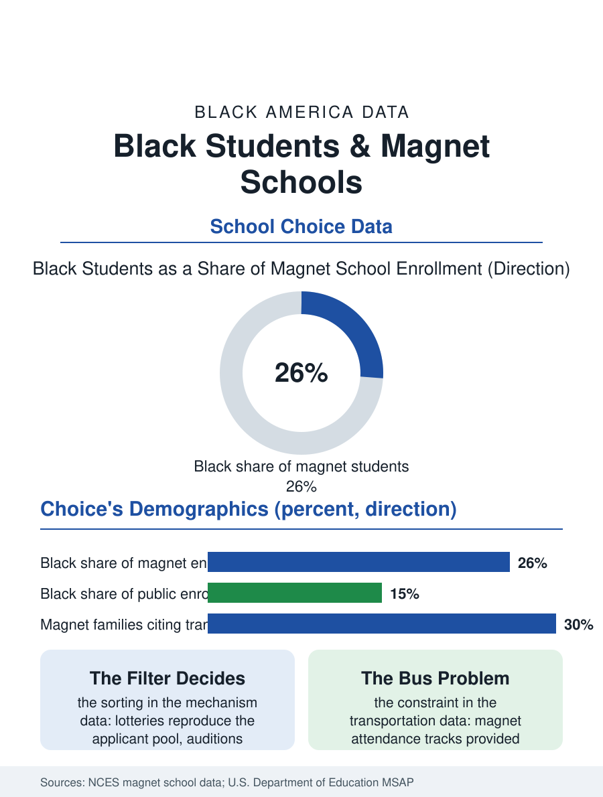

Black Education
Choice's Bargain: Black Students and Magnet Schools
Magnets were built to make integration attractive and now ration quality through lotteries, auditions, and bus routes that Black families navigate heavily. The magnet file.

The magnet school was born as a desegregation instrument: a public school so attractive, in theme and quality, that families would choose integration. Half a century on, magnets enroll a substantial and diverse share of urban students, and Black students hold a large place in them, roughly a quarter or more of magnet enrollment nationally in the federal counts. But the instrument's equity function has complicated with time, as lotteries, auditions, and applications sort within the choice system itself. This article reads the magnet file.
Choice's Original Bargain
The federal Magnet Schools Assistance Program's history in the data runs in two acts. The first act is the desegregation era, when magnets demonstrably drew integrated enrollments in districts under court orders, offering themes, Montessori, language immersion, performing arts, STEM, that neighborhood schools did not, and delivering achievement results that the early evaluations found promising. The second act is the post-order era: as court supervision lifted, magnets evolved into a general school quality strategy, and their enrollments settled toward the demographic of the families best positioned to choose, informed, application-capable, transportation-flexible, which in district after district means the magnet sector skims the most engaged families from the neighborhood schools around them. Black students' position in this sorting is genuinely double. Black families use magnets heavily and report high satisfaction in the program surveys; magnets in many cities operate the most integrated and highest-performing schools available to Black children, including the celebrated exam and arts magnets whose alumni fill this atlas's professional files. Simultaneously, the application machinery, deadlines in the fall of the prior year, auditions for the arts seats, test scores for the academic ones, sibling and geography preferences, allocates the seats through filters that reward exactly the parental resources the choice system was supposed to make unnecessary.
Lotteries, Auditions, and the Fine Print
The admissions mechanism is where the file's equity is decided, and the mechanisms differ by school type in ways the enrollment data expose. Lottery magnets, oversubscribed seats drawn at random among applicants, reproduce the applicant pool's composition, so their diversity is set upstream, by outreach and transportation, and districts that fund buses and market aggressively to Black neighborhoods enroll magnets that look like the city. Screened magnets, grades, tests, auditions, portfolio reviews, reproduce the preparation distribution, which is the readiness file's distribution wearing an application number. The auditioned arts magnets write the sharpest version: a ten-year-old's audition reflects a decade of the lessons economy, so the arts magnet's entering class can be simultaneously the city's most integrated school and a sieve for family resources, a combination the enrollment tables document without embarrassment because it is, structurally, exactly what the mechanism predicts. Transportation is the quiet filter beneath all of them: the federal civil rights data show magnet attendance correlating with provided transportation, and Black families report transportation as the binding constraint on choice at the highest rates, since the magnet across town at a 6 a.m. bus stop is a different product than the magnet on a bus route.
What Magnets Prove
The magnet sector's deepest significance in this atlas may be evidentiary. Magnets demonstrate, at public scale and over decades, that Black parents behave exactly as the school choice literature's rational chooser: they apply, lottery, audition, and transport their children toward quality and theme at enormous rates whenever the system makes choosing possible, which buries the deficit explanation of Black educational outcomes under the sector's own application data. They also demonstrate the ceiling of choice as an equity instrument: a sector can be simultaneously the best available option for the Black families inside it and a sorting mechanism that concentrates advantage among the choosing, leaving the neighborhood school, which cannot refuse anyone, holding the city's hardest work with its most engaged families skimmed away. The policy responses in the current record attempt the repair: weighted lotteries reserving seats by income or neighborhood, regional transportation funding, application assistance through the trusted community channels, and magnet replication, planting the successful themes inside neighborhood schools rather than rationing them by application. The magnet file closes where its history began. The instrument was built to make integration attractive. Its modern data show it makes quality attractive, rationed by machinery. Fixing the machinery, the lottery weights, the buses, the audition's preparation gap, is less inspiring than founding the schools was, and it is, on the evidence, the work that decides whether the founding idea survives its own success.
More in Black Education
Black Educational Attainment: High School Parity, the College Gap
About 89 percent of Black adults hold a high school diploma and one in four holds a bachelor's degree or higher — the attainment ladder, the college completion gap, and the generational trend.
Historically Black Colleges and Universities: Enrollment and Degrees
More than 100 HBCUs enroll roughly 290,000 students and award about one in six Black bachelor's degrees — an outsized share from a small sector. The federal education data.
Black College Enrollment: 2.4 Million Students
About 2.4 million Black students are enrolled in American colleges — nearly two-thirds of them women. The NCES enrollment data by sector, level, and trend.
Source: National Center for Education Statistics magnet school enrollment data; U.S. Department of Education Magnet Schools Assistance Program evaluations.